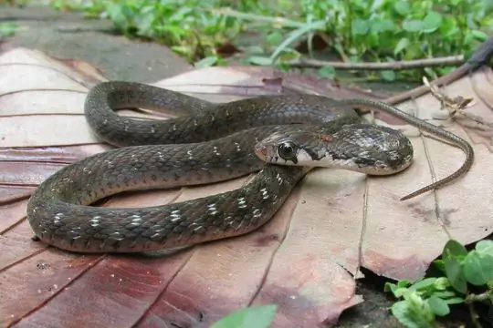
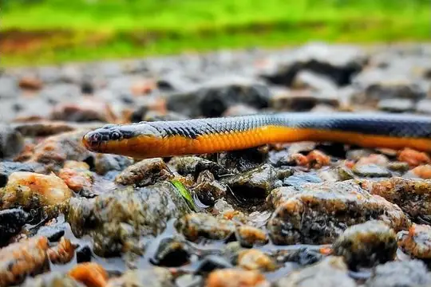
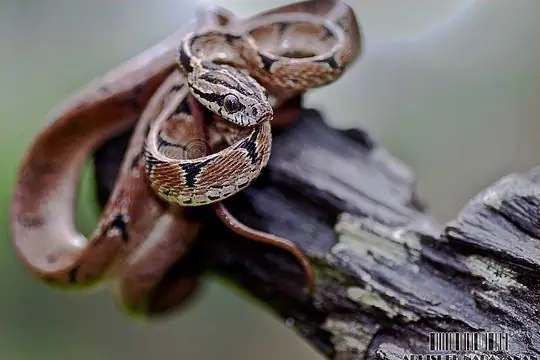
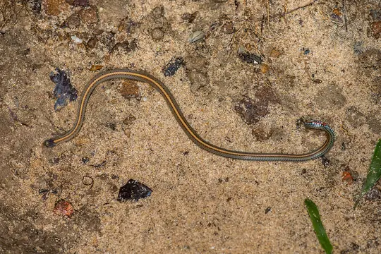
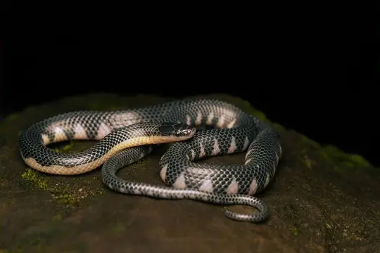
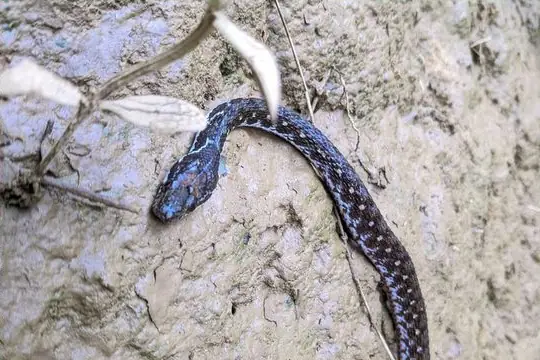

Snakes of Bangladesh
76 snake species are recorded in Bangladesh in SnakeList: 29 venomous and 47 non-venomous, from 10 families.
- 76species
- 29venomous
- 47non-venomous
- 10families
Species
Showing 76 species
 Annulated Sea SnakeHydrophis cyanocinctus
Annulated Sea SnakeHydrophis cyanocinctus Ashy Kukri SnakeOligodon cinereus
Ashy Kukri SnakeOligodon cinereus Bamboo PitviperTrimeresurus erythrurus
Bamboo PitviperTrimeresurus erythrurus Banded KraitBungarus fasciatus
Banded KraitBungarus fasciatus Banded KukriOligodon arnensis
Banded KukriOligodon arnensis Banded Racer (fasciolata)Argyrogena fasciolata
Banded Racer (fasciolata)Argyrogena fasciolata Bar-necked KeelbackFowlea schnurrenbergeri
Bar-necked KeelbackFowlea schnurrenbergeri
Bindee keelbackRhabdophis bindi Black-banded Sea SnakeHydrophis nigrocinctus
Black-banded Sea SnakeHydrophis nigrocinctus
Brown Trapezoid SnakeSmithophis bicolor Brown Vine Snake (anomala)Ahaetulla anomala
Brown Vine Snake (anomala)Ahaetulla anomala Buff Striped KeelbackAmphiesma stolatum
Buff Striped KeelbackAmphiesma stolatum Burmese PythonPython bivittatus
Burmese PythonPython bivittatus Cantor's Kukri SnakeOligodon cyclurus
Cantor's Kukri SnakeOligodon cyclurus Cantor’s black-headed snakeSibynophis sagittarius
Cantor’s black-headed snakeSibynophis sagittarius- No photo yetCheckered KeelbackXenochrophis piscator
 Chequered KeelbackFowlea piscator
Chequered KeelbackFowlea piscator Collared Reed Snake (pavimentata)Calamaria pavimentata
Collared Reed Snake (pavimentata)Calamaria pavimentata- No photo yetCollared Sea SnakeHydrophis stricticollis
 Common Cat SnakeBoiga trigonata
Common Cat SnakeBoiga trigonata Common KraitBungarus caeruleus
Common KraitBungarus caeruleus Common Many-tooth SnakeSibynophis collaris
Common Many-tooth SnakeSibynophis collaris Common Mock ViperPsammodynastes pulverulentus
Common Mock ViperPsammodynastes pulverulentus Common sea kraitLaticauda laticaudata
Common sea kraitLaticauda laticaudata Common Slug SnakePareas monticola
Common Slug SnakePareas monticola Common Wolf Snake (aulicus)Lycodon aulicus
Common Wolf Snake (aulicus)Lycodon aulicus Daudin's BronzebackDendrelaphis tristis
Daudin's BronzebackDendrelaphis tristis Diard's BlindsnakeArgyrophis diardii
Diard's BlindsnakeArgyrophis diardii Dog-faced Water SnakeCerberus rynchops
Dog-faced Water SnakeCerberus rynchops Dwarf SeasnakeHydrophis caerulescens
Dwarf SeasnakeHydrophis caerulescens Eastern bronzeback tree snakeDendrelaphis proarchos
Eastern bronzeback tree snakeDendrelaphis proarchos
Eastern Cat SnakeBoiga gocool- No photo yetEstuarine Sea SnakeHydrophis obscurus
 Golden Flying SnakeChrysopelea ornata
Golden Flying SnakeChrysopelea ornata Gray Cat SnakeBoiga siamensis
Gray Cat SnakeBoiga siamensis
Gray's Kukri SnakeOligodon dorsalis Greater Black KraitBungarus niger
Greater Black KraitBungarus niger Green Cat SnakeBoiga cyanea
Green Cat SnakeBoiga cyanea Green Rat Snake (nigromarginata)Ptyas nigromarginata
Green Rat Snake (nigromarginata)Ptyas nigromarginata- No photo yetGünther's sea snakeMicrocephalophis cantoris
 Indian CobraNaja naja
Indian CobraNaja naja Indian Rock PythonPython molurus
Indian Rock PythonPython molurus Indo-Chinese Rat SnakePtyas korros
Indo-Chinese Rat SnakePtyas korros- No photo yetJerdon's Worm SnakeIndotyphlops jerdoni
 King CobraOphiophagus hannah
King CobraOphiophagus hannah Lesser Black KraitBungarus lividus
Lesser Black KraitBungarus lividus Light-barred Kukri SnakeOligodon albocinctus
Light-barred Kukri SnakeOligodon albocinctus MacLelland's Coral SnakeSinomicrurus macclellandi
MacLelland's Coral SnakeSinomicrurus macclellandi
Mizo rain snakeSmithophis atemporalis Monocled CobraNaja kaouthia
Monocled CobraNaja kaouthia Northern Red-necked KeelbackRhabdophis helleri
Northern Red-necked KeelbackRhabdophis helleri Olive Keelback Wart SnakeAtretium schistosum
Olive Keelback Wart SnakeAtretium schistosum Orange-collared KeelbackRhabdophis himalayanus
Orange-collared KeelbackRhabdophis himalayanus Oriental RatsnakePtyas mucosa
Oriental RatsnakePtyas mucosa Painted Keelback (cerasogaster)Xenochrophis cerasogaster
Painted Keelback (cerasogaster)Xenochrophis cerasogaster Plin's Banded RacerPlatyceps plinii
Plin's Banded RacerPlatyceps plinii Pope's Bamboo Pit ViperTrimeresurus popeiorum
Pope's Bamboo Pit ViperTrimeresurus popeiorum Radiated RatsnakeCoelognathus radiatus
Radiated RatsnakeCoelognathus radiatus Rainbow Mud SnakeEnhydris enhydris
Rainbow Mud SnakeEnhydris enhydris Red Bamboo SnakeOreocryptophis porphyraceus
Red Bamboo SnakeOreocryptophis porphyraceus Rough-tailed Sand BoaEryx conicus
Rough-tailed Sand BoaEryx conicus Russell's ViperDaboia russelii
Russell's ViperDaboia russelii Sahyadri Vine SnakeAhaetulla sahyadrensis
Sahyadri Vine SnakeAhaetulla sahyadrensis Sand Snake (condanarus)Psammophis condanarus
Sand Snake (condanarus)Psammophis condanarus Siebold's Mud SnakeFerania sieboldii
Siebold's Mud SnakeFerania sieboldii Striped Sea SnakeHydrophis fasciatus
Striped Sea SnakeHydrophis fasciatus- No photo yetTawny Cat Snake (ochracea)Boiga ochracea
 Trinket SnakeCoelognathus helena
Trinket SnakeCoelognathus helena Twin-spotted Wolf SnakeLycodon jara
Twin-spotted Wolf SnakeLycodon jara Wall's BronzebackDendrelaphis cyanochloris
Wall's BronzebackDendrelaphis cyanochloris
Wall's KeelbackHerpetoreas xenura Wall's Sind KraitBungarus walli
Wall's Sind KraitBungarus walli White-headed Blind SnakeIndotyphlops albiceps
White-headed Blind SnakeIndotyphlops albiceps Yellow-spotted Keelback Water SnakeFowlea flavipunctatus
Yellow-spotted Keelback Water SnakeFowlea flavipunctatus Zaw's Wolf SnakeLycodon zawi
Zaw's Wolf SnakeLycodon zawi- No photo yetPseudoboa krait
No snakes in Bangladesh match.
Bangladesh’s snakes in numbers
- Families: Colubridae 44, Elapidae 17, Homalopsidae 3, Typhlopidae 3, Viperidae 3, Pythonidae 2, Boidae 1, Pareidae 1, Psammophiidae 1, Pseudaspididae 1.